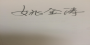

华南农业大学
本科生毕业论文指导教师成绩评定表
学号 | 202129210105 | 姓名 | 黄满德 | 专业 | 计算机科学与技术 | ||||
毕业论文题目 | 基于web的大学生跨专业互助学习系统 | ||||||||
指导教师 评语及 成 绩 评 定 | 评价项目 | 评价指标 | 最大分值 | 评分 | |||||
学习态度与工作量 | 学习态度认真，工作作风严谨务实；工作量饱满，按期圆满完成规定的任务。 | 25 | 21 | ||||||
研究水平与能力 | 能熟练掌握和运用所学专业基本理论、基本知识和基本技能分析解决相关理论和实际问题；论点鲜明，论据充分；实验设计合理，数据准确可靠，理论分析与计算正确；具有从事科学研究工作或专门技术工作的初步能力。 | 25 | 21 | ||||||
论文撰写质量 | 论文结构严谨，逻辑性强，层次清晰，技术用语准确；行文流畅，语句通顺；论文格式符合规范要求。 | 20 | 18 | ||||||
学术水平与创新 | 具有一定的学术水平或实践应用价值；对与课题相关的理论或实际问题有较深刻的认识，有新的见解，有一定的创新。 | 10 | 7 | ||||||
资料收集与分析 | 具有一定的查阅、整理、分析中外文文献的能力；能较好理解课题任务并提出实施方案；查阅文献有一定广泛性，资料收集充分。 | 20 | 18 | ||||||
指导教师评语 黄满德同学在整个毕业论文过程中态度较为端正，基本能按要求汇报进度情况，以及与指导老师讨论相关问题。所选题目具有一定的实用价值，难度适中，工作量适中；黄满德同学能熟练使用网络等工具进行文献查阅和相关开发技术的学习，在此基础上较好的完成了需求分析、系统设计、系统开发和系统测试，体现出了一定的学习能力、专业工程能力、综合运用知识的能力；所撰写的论文结构组织较为合理、内容较为充实、格式较为规范。 成绩（百分制）：85 指导教师（签名）： 年 月日 | |||||||||